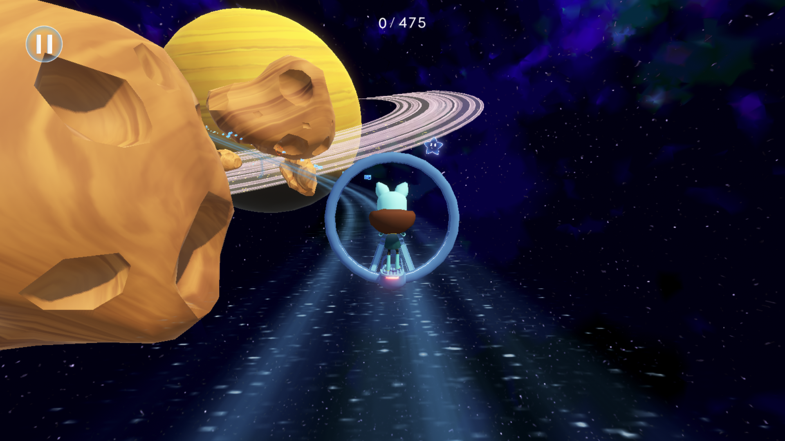

Role:
Game Designer, Story Writer, Programmer, Audio SFX Editor
Overview:
Overview: Developed for the international TV series "Interstellar Ella" by Fabrique Fantastique, this game targets children aged 6-9, blending adventure with educational elements about space.
Key Contributions:
- Designed and tested multiple game prototypes.
- Developed a third-person action game featuring various environments and mechanics, including racing on Mars and flying in space.
- Focused on enhancing player movement with responsive controls and dynamic acceleration
- Handled gameplay elements like in-game dialogue, pause menu, debug options, objective and quiz systems.
- Adapted series music for gameplay and implemented dynamic sound and audio.
Technical Challenges:
- Optimized for WebGL with separate builds for each level to ensure smooth transitions.
- Implemented a benchmark system for game quality adjustment, enhancing compatibility with low-end devices.
- Managed tight deadlines through efficient planning and constant project readjustments.
Outcome:
Successfully delivered an engaging, educational game within a strict timeframe, overcoming significant technical challenges to ensure broad accessibility.
